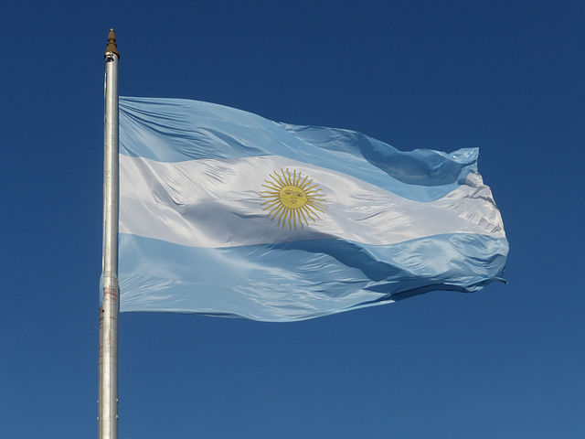
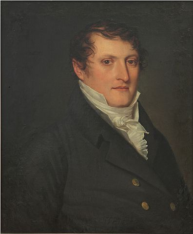

Le drapeau national de l'Argentine est, avec les armoiries de la République argentine,
l'hymne national argentin et la cocarde de l'Argentine, l'un des quatre symboles nationaux de ce pays.
Sa création correspond à Manuel Belgrano, qui l'a conçu avec les couleurs bleu et blanc de la cocarde nationale ;
bien que plus tard, il ait subi quelques modifications. Il a volé pour la première fois à Rosario, le 27 février 1812.
Le drapeau a été officiellement adopté comme symbole des Provinces-Unies du Río de la Plata le 20 ou le 25 juillet 1816 par le Congrès général constituant de San Miguel de Tucumán.
C'est le même Congrès qui avait proclamé l'indépendance de l'Argentine le 9 juillet 1816.
Des députés représentant Tarija et d'autres régions du nord de l'Argentine, l'actuelle Bolivie, ont participé à ce congrès.
Lors de cette séance, l'utilisation du drapeau créé par Manuel Belgrano comme unique drapeau des Provinces-Unies du Río de la Plata a été confirmée.
Ce drapeau est celui que la République argentine a reçu en héritage.
Le premier drapeau argentin était constitué d'un carré bleu clair cousu à un carré blanc de même taille (les mesures sont imprécises, car ces drapeaux ont été fabriqués par des soldats en service dans des circonstances parfois défavorables qui ne permettaient pas de prendre autant de temps la confection d'un insigne).
La conception des bandes horizontales a été progressivement modifiée car parfois les drapeaux étaient de tailles disproportionnées et devaient être hissés de différentes manières.
Plus tard, en 1818, le directeur suprême des Provinces Unies du Río de la Plata, Juan Martín de Pueyrredón, a défini le drapeau principal, y compris le Soleil de Mai (ou Soleil Inca),
qui représente la Révolution de Mai - née dans les nuages et jour de pluie réalisé dans la ville de Buenos Aires, le 25 mai 1810, lorsque le soleil se levait au zénith, commençant le processus d'indépendance de la vice-royauté du Río de La Plata du Royaume d'Espagne - et du dieu Inca soleil, Inti, qui est un soleil figuratif à visage humain, de couleur or jaune à trente-deux rayons : 16 rayons flamboyants pointant ou "tournant" dans le sens des aiguilles d'une montre, et 16 droits placés alternativement.

Drapeau de la République Argentine

Manuel Belgrano, créateur du drapeau Argentin
Créé par Alejo Tenaglia - Service Civique LEGTA Pau Montardon